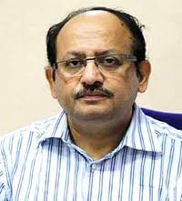

|
Message from the Chairman, KBTWelcome to Heritage Institute of Technology, KolkataAs you embark on your journey here, do remember that college education is not entirely academic in nature. It extends beyond the classrooms, laboratories and workshops, to campus action groups, seminars, meetings, cultural and social activities and sporting events. I hope that you will be proud of being a member of the Heritage family. Members of faculty of the Institute are known for their academic achievements, teaching abilities and commitment. You will be challenged to unlock your potential and hone your strength and abilities. You will gain the confidence to push yourself towards new horizons. We will judge our success as an institution by how well you succeed in realising your potential as a student and in your professional career later. Now that you have chosen Heritage Institute of Technology, Kolkata, I encourage you to explore all that the institution has to offer. H.K.Chaudhary |
 |
Message from the Secretary, KBTCongratulations on choosing Heritage Institute of Technlogy, Kolkata as a guiding institution in your quest for Higher education. This is one of the most important decisions of your life and will surely go a long way in preparing you for a bright future ahead. I do hope that this decision of yours opens up the door to a lifetime of opportunities for self growth and service to others. How fruitful your decision turns out to be, will depend primarily on the efforts you invest in your own intellectual, professional and social development. My advice to you will be - invest wisely and be assured tthat the HITK faculty and staff are behind you in all your efforts. The institution is committed to creating an ambience for nurturing innovation, creativity and excellence in students. I am convinced that each of you graduating from HITK will leave your indelible mark of success in whichever sphere of life you choose to be and I fervently hope that your desire to do well for the benefit of humanity only increases with your successes in life. Sajjan Bhajanka |
Message from the Chairman, Board of Governors, HIT-KIt is my Pleasure to welcome you to the Heritage family! I am sure that the next few years here will be an enriching experience for you. Our endeavour is to provide students like you the best possible learning experience. Our team of highly qualified teachers, supported by State-of-the-art laboratory equipments, library and classrooms are all heared to ensure tthat you receive all the very best facilities a student deserves. In keeping with the Vision and Mission of Kalyan Bharti Trust, we make every effort to put equal stress of co-curricular activities for the all-round development of Mind, Body and Soul so that you develop into global citizens, while retaining our traditional values. It is a matter of great pride for me and the Heritage family that our students have been achieving outstanding results both in academics as well as beyond academics. I sincerely hope that you, as a member of tthe new batch of students, will put in your best to take this outstanding performance to even greater heights. I wish each one of you a rewarding and enjoyable experience at Heritage Institute of Technology. P.R.Agarwala |
|
|  |
Message from the Principal, HIT-KI am delighted to welcome you to the Heritage Institute of Technology, Kolkata (HIT-K), a distinguished institute for engineering education in this part of the world. Right from the inception, HIT-K has been committed to provide quality engineering education to its students at both undergraduate and postgraduate levels. Innovation has been one of the key factors in HIT-K and we constantly try to prepare our students as responsible and innovative global citizens having a firm grounding in their respective disciplines. It may be highlighted that all eligible B.Tech. Programmes of the Institute are accredited by the National Board of Accreditation (NBA). The Institute was also one of the 25 private unaided engineering institutions across the country selected for Technical Education Quality Improvement Programme (TEQIP), Phase II, a World Bank funded initiative of the MHRD, Government of India, the primary objective of which was to enhance the quality of teaching and learning, and thereby, expanding the employability space of the graduating students. Based on these achievements, the Institute has been able to secure Autonomous Status from the University Grants Commission (UGC), New Delhi with effect from the Academic Year 2014-15. The HIT-K has all along encouraged its faculty and students to engage in cutting-edge research and present their findings in National and International Conferences and to publish in refereed National and International Journals. In order to give students exposure to the global engineering ethos at an early age, the HIT-K has made standing arrangements and signed MOUs with a number of premier US and UK universities for academic and educational collaboration, including summer research internships. HIT-K is fortunate to have a team of academically – enlightened and dedicated members of faculty, trained in premier universities and institutions in the country and abroad, who are at the forefront of their professional activities. This prospectus includes information on the distinctions of the HIT – K in general, in the field of academics and highlights some achievements of the institute in Research and Development (R & D) and in providing consultancy to the industry and to the government. Should you have questions about HIT-K and its academic and extra-curricular programmes that this prospectus does not cover, please do not hesitate to contact us personally. We will be pleased to help you with answers to your queries. I look forward to meeting you in person and take this opportunity to wish you all the best for your higher studies at this institute that has all the ingredients to make a difference in your life. Basab Chaudhuri |